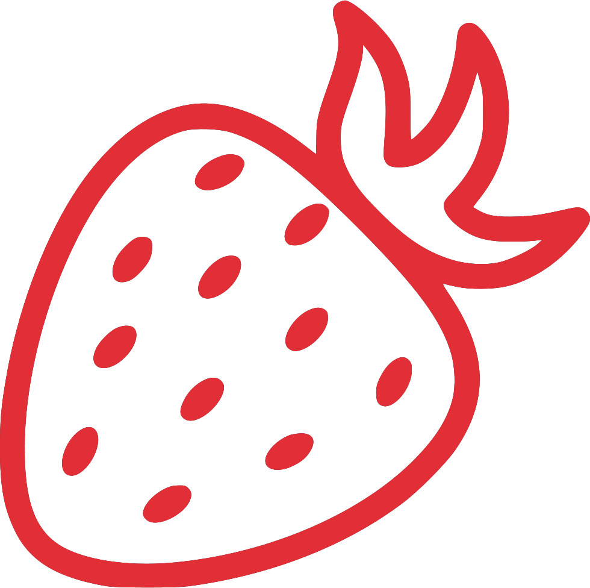

 Bobičasti raj
Nalazimo se u jednoj varošici zvanoj
Lajkovac, poznatoj po Lajkovačkoj pruzi i njegovom Milu.
Pošto smo
imali
iskustva sa uzgojem cveća,
iskoristili smo to znanje i postojeće plastenike da budemo jedni od prvih jagodara
koji je uzgajaju vertikalno. Otpočeli smo sa vertikalnim uzgojem jagode 2022
godine. Prednosti vertikalne proizvodnje su veća
iskorišćenost prostora, lakše branje, bolja kontrola zalivanja kao i
najbitniji razlog zdravije jagode. Pošto vertikalni uzgoj se radi samo u
plastenicima to znači i manje
korišćenje pesticida jer se jagoda ne nalazi napolju i nije pod konstantnim napadom
bolesti i insekata. Možemo
slobodno reći da je ovo revolucionarni način za uzgoj velike, zdrave i sočne jagode.
-
Mokranjčeva 4, Lajkovac
-
bobicasti.raj@gmail.com
- 064/217-3440